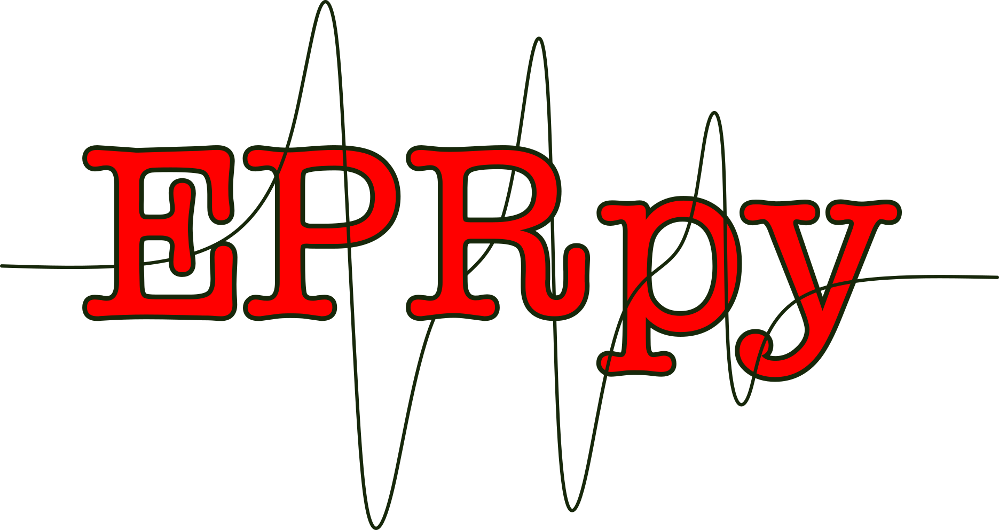

Welcome to EPRpy’s documentation¶
{kind=link}
EPRpy is a python library to streamline handling, inspection and processing of Electron Paramagnetic resonance data. EPRpy might be of use to you if you need to read, plot and export EPR data acquired on Bruker EPR spectrometers for routine analysis. EPRpy focusses on ease of use, generating quick plots for data inspection and features automated processing workflows for specific EPR experiments.
Installation¶
To install EPRpy, python needs to be installed. EPRpy works with python versions greater than 3.9. Python can be downloaded from the official website.
Python installation and version can be confirmed by typing
pythonin a terminal or command prompt. Note that the alias forpythoncan bepython3on your operating system.If python and its package manager pip is installed, EPRpy can be installed using pip.
Clone/download the code in this repository. Navigate to the folder where
setup.pyfile is present and open a terminal at this folder. Then, type in a terminal :
python -m pip install .
This command will install EPRpy and the following python libraries required by EPRpy:
If the installation is successful, you can import EPRpy and printing the version as shown below.
import eprpy as epr
print(epr.__version__)
Quick start¶
An example workflow with EPRpy is shown below.
# import EPRpy
import eprpy as epr
# Load data by providing path to .DSC or .DTA file
epr_data = epr.load('tempo.DSC')
# plot
fig,ax = epr_data.plot()
ax.set_xlabel('Magnetic Field [Gauss]')
# export
## epr_data.x contains the abscissa (field values in this case)
## epr_data.data contains the spectrum (or intensity)
out_data = np.array([epr_data.x,epr_data.data])
np.savetxt('tempo.txt',out_data.T)
Using EPRpy¶
User guide